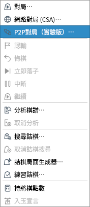
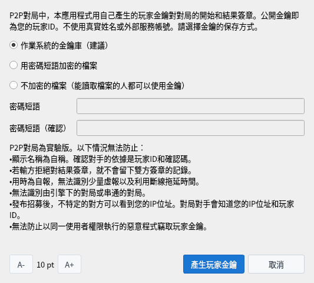
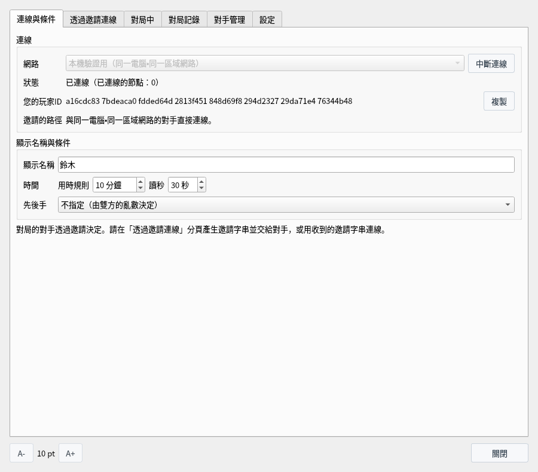
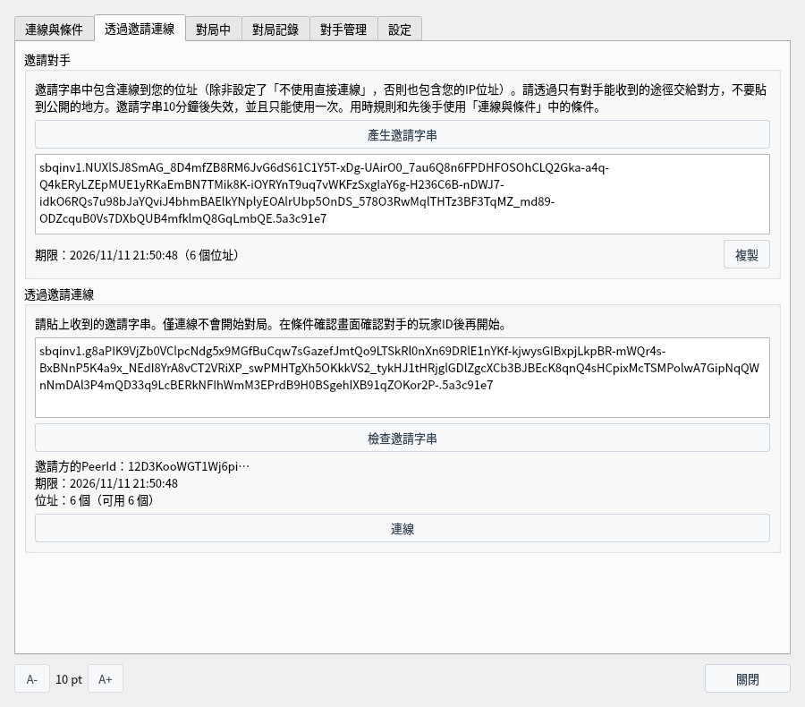
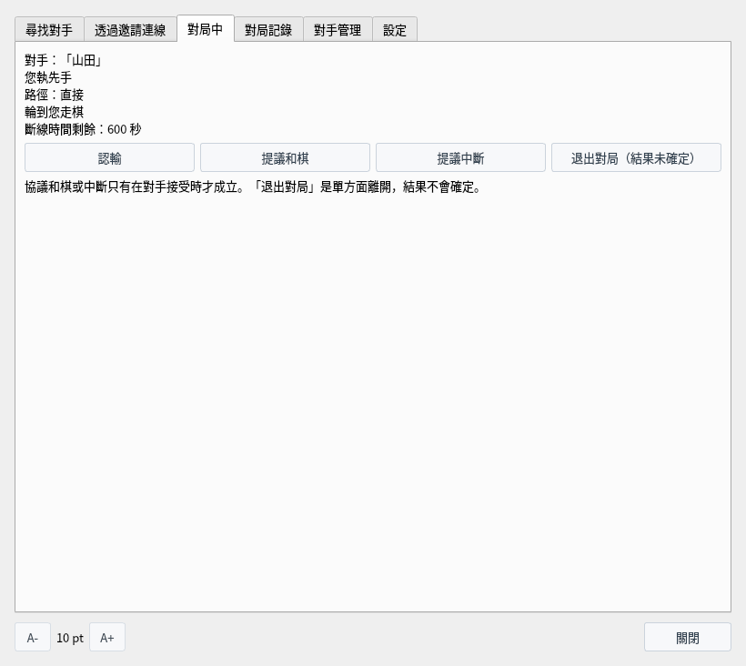
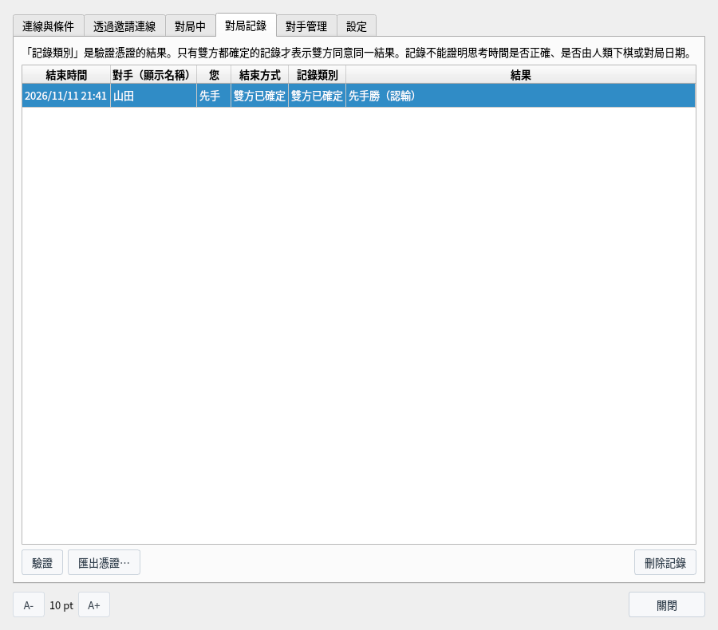
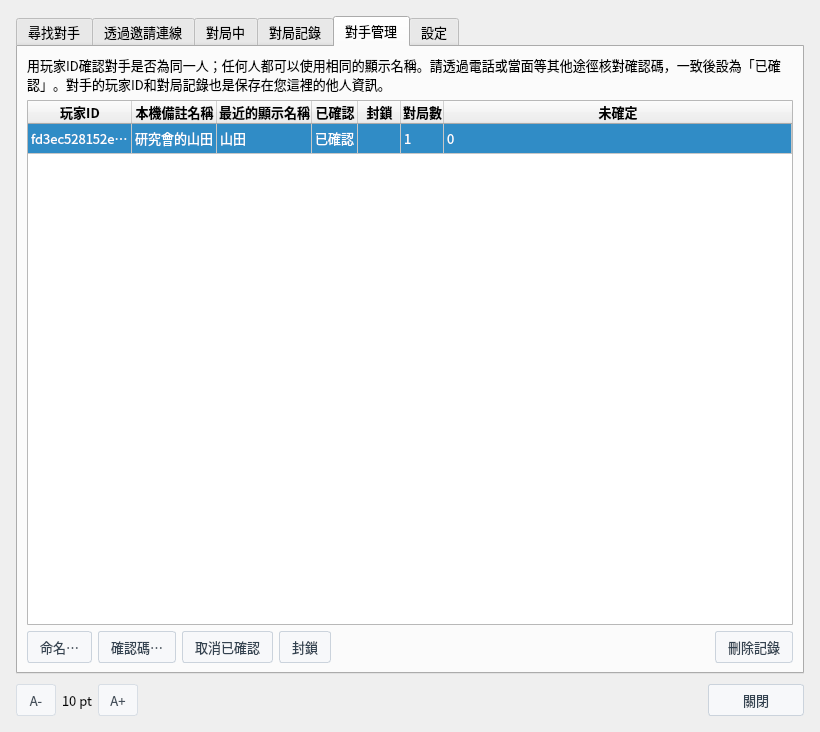
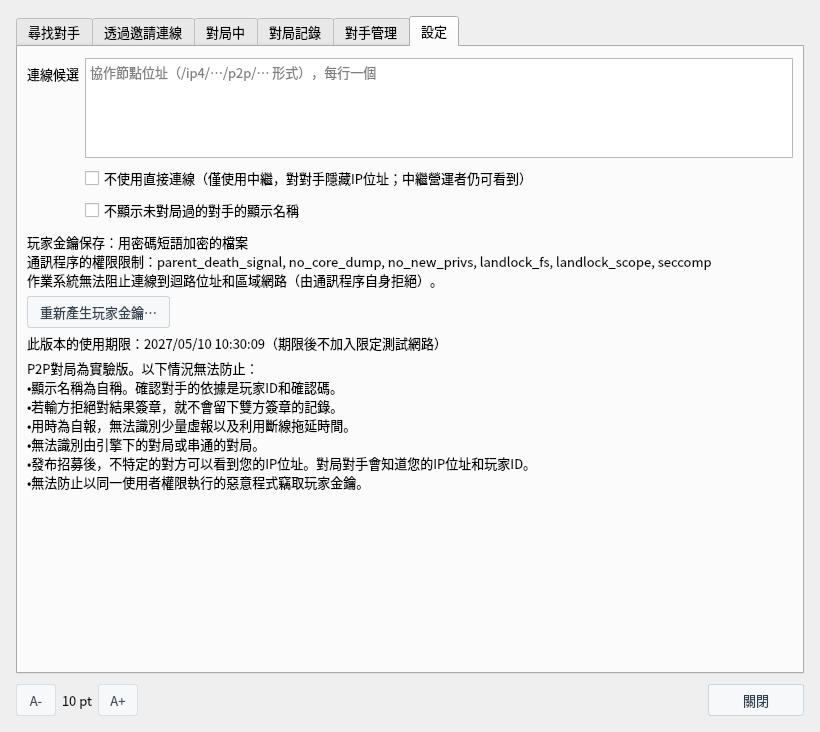
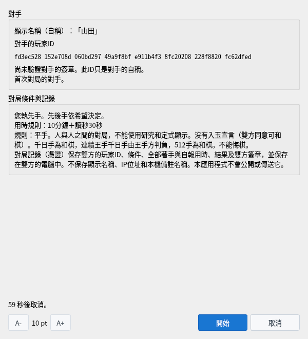
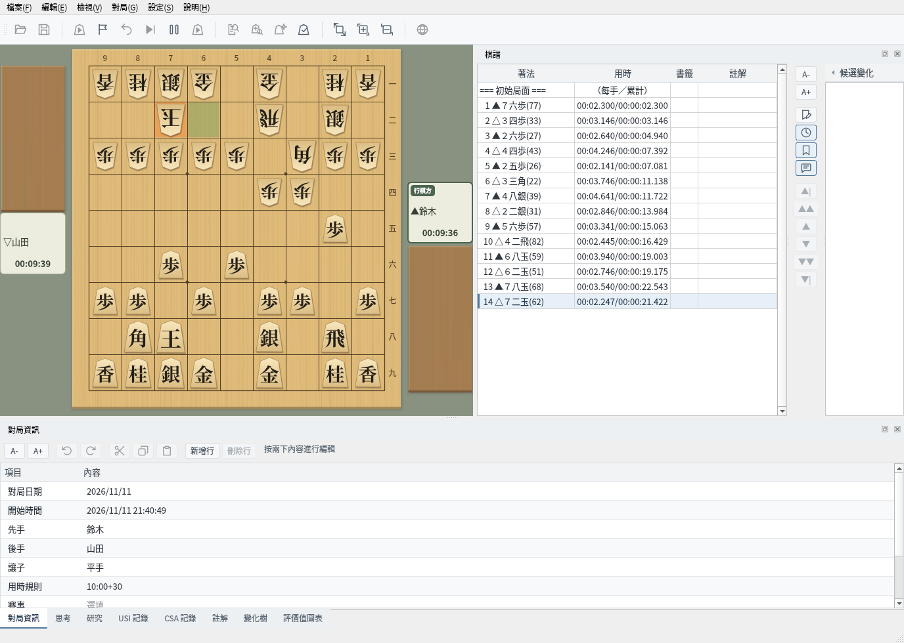

P2P對局（實驗版）
不經過對局伺服器，與對手直接連線下棋，並保存雙方確定了開始與結果的對局記錄
這是實驗中的功能，畫面和規則今後可能會改變。截圖於 Linux 上以繁體中文介面擷取。
什麼是P2P對局
僅啟用P2P對局建置的將棋盤Q提供的實驗中的對局功能
P2P對局不像CSA網路對局那樣經過對局伺服器，而是由自己和對手的應用程式直接連線下棋（無法直接連線時經過協作節點的中繼，但協作節點不會成為對局伺服器，見2）。對局的對手透過交給對方邀請字串來決定。這是與熟人下棋的功能，沒有尋找不特定對手的公開招募。
對局的開始和結果由雙方的應用程式用本應用程式產生的玩家金鑰自動確定（無需操作）。玩家金鑰的公開金鑰就是您的「玩家ID」。不使用真實姓名或外部服務的帳號。對局結束後，雙方已確定的對局記錄（憑證）會保存在雙方的電腦中，任何人都可以驗證。
無法直接連線時，通訊從自己的應用程式經過協作節點到達對手的應用程式。路徑與CSA網路對局經過伺服器時相似，但協作節點只是轉交保持加密狀態的通訊。即使經過中繼，對局的另一方仍是對手的應用程式，著手的確認和結果的確定都由雙方的應用程式進行。
| 項目 | CSA網路對局的對局伺服器 | P2P對局的協作節點（中繼時） |
|---|---|---|
| 著手是否合法 | 由伺服器判定 | 不判定。由雙方的應用程式各自確認 |
| 用時 | 由伺服器計時 | 不計時。用時由雙方的應用程式自報，並與對方的應用程式測得的時間對照 |
| 勝負與終局 | 由伺服器決定並通知 | 不決定。由雙方的應用程式根據棋譜決定，並用玩家金鑰確定 |
| 對局記錄 | 伺服器也可以儲存 | 不儲存。只儲存在雙方的應用程式中 |
| 通訊內容 | 伺服器接收著手並轉送給對手 | 讀不到。著手、玩家ID、顯示名稱在雙方的應用程式之間保持加密傳送 |
| 對局的配對 | 由伺服器配對 | 不配對。對手由邀請決定 |
協作節點的營運者能看到的是 IP 位址，以及哪些 IP 位址之間建立了連線（對手和網路可以看到的資訊）。協作節點可以中斷或延遲它中繼的通訊，但無法改寫內容（改寫過的通訊會在加密的檢查中被發現，應用程式不會接受）。通訊中斷時，與線路中斷時一樣處理（線路中斷時）。
經過中繼連線後，雙方的應用程式仍會嘗試切換為直接連線。切換後通訊不再經過協作節點，「對局中」分頁的「路徑」會變為「直接」。任一方選擇了「不使用直接連線」時不會切換，整局都經過中繼。
P2P對局是兩人下的一對一對局，一個應用程式同時只能有一局對局。無論是否使用協作節點都一樣。協作節點只負責可達性確認和中繼，不會安排對局的組合，也不會讓一個應用程式同時下多局。
| 情況 | 不使用協作節點 | 使用協作節點 |
|---|---|---|
| 您邀請 7 個人 | 一次只能下一局。與最先連線的人對局，其他人會被「對手正在與他人協商或對局。」拒絕。要與 7 人都下，每局結束後把新的邀請字串交給下一個人，逐一對局。 | 與不使用協作節點相同，一次只能下一局。 |
| 8 人同時下 4 局 | 4 組各由一方產生邀請字串交給對方。在同一區域網路中，各組分別連線，因此可以同時下 4 局（一台電腦上也最多可以執行 8 個應用程式）。 | 4 組各由一方邀請另一方。4 組都可以使用同一個協作節點（一個協作節點的中繼同時最多 128 人）。 |
同時有效的邀請字串最多 4 個，因此產生 7 個時，最早的 3 個會失效。沒有把被邀請的人互相組合的功能（例如舉辦比賽），也沒有觀戰功能。邀請的規則請參閱可以邀請的人數與次數。
P2P對局是實驗中的功能，不包含在發布的 ShogiBoardQ 中。要使用時，從原始碼建置時在 CMake 中加上 -DENABLE_P2P_PLAY=ON（需要 libsodium 和 Rust，建置步驟見Linux 建置與發布步驟）。
| 項目 | 規則 |
|---|---|
| 讓子與對局者 | 僅限平手，人與人之間的對局。對局中不能使用研究、詰棋搜尋、棋譜分析和定式顯示。 |
| 用時規則 | 用時（分鐘）和讀秒（秒）。用時由雙方自報，並與對方測得的時間對照。 |
| 先後手 | 依邀請方的希望決定；選擇「不指定」時由雙方的亂數決定。 |
| 終局 | 認輸、將死、超時負、千日手（和棋）、連續王手千日手（王手方判負）、達到512手（和棋）、協議和棋、協議中斷。 |
| 沒有的規則 | 沒有悔棋和入玉宣言（入玉時可以經雙方同意判為和棋）。 |
兩種對局方式
對手在哪裡，決定了是否需要使用協作節點。各自的步驟在單獨的頁面中說明
不使用協作節點對局
與同一電腦・同一區域網路的對手，只用邀請字串連線下棋。既不需要協作節點，也不需要變更「設定」分頁。可以邀請的人數與次數、防火牆的設定也在這一頁。
查看詳情 →使用協作節點對局
透過協作節點與網際網路上的對手下棋。由誰啟動協作節點、啟動方法，以及不讓對手看到 IP 位址的設定也在這一頁。
查看詳情 →| 項目 | 不使用協作節點 | 使用協作節點 |
|---|---|---|
| 可以對局的對手 | 同一電腦・同一區域網路的對手 | 網際網路上的對手（另一個家庭、另一條線路） |
| 「網路」 | 本機驗證用（同一電腦・同一區域網路） | 限定測試用 |
| 協作節點 | 不需要 | 需要一個（由某人啟動，雙方都填入其位址） |
| 「設定」分頁 | 無需變更 | 在「連線候選」中填入協作節點 |
| 邀請字串中的位址 | 這台電腦在區域網路內的位址（192.168.… 等） | 經由協作節點的位址（如果電腦可以從外部直接到達，還有網際網路上的 IP 位址） |
| 對手能看到的位址 | 只有區域網路內的位址 | 直接連線時為網際網路上的 IP 位址（可用「不使用直接連線」隱藏） |
| 使用期限 | 沒有 | 建置後 180 天 |
兩個網路之間互不相通。對局的兩人要選擇相同的網路並連線。
準備
開啟P2P對局視窗，產生玩家金鑰並連線網路
從選單列的「對局」中選擇「P2P對局（實驗版）…」，會開啟P2P對局視窗。視窗開啟時也可以操作棋盤和棋譜。


「對局」選單：以「P2P對局（實驗版）…」開啟視窗
在「連線與條件」分頁中選擇「網路」，然後按一下「連線」。第一次連線時會開啟「準備P2P對局」。閱讀下方列出的無法防止的情況後，選擇金鑰的保存方式，按一下「產生玩家金鑰」。
- 作業系統的金鑰庫（建議）：保存在作業系統的金鑰庫（KWallet、GNOME 鑰匙圈等）中。未使用 QtKeychain 建置時無法選擇。
- 用密碼短語加密的檔案：保存在用由密碼短語產生的金鑰加密的檔案中。啟動應用程式後第一次連線時會詢問密碼短語。
- 不加密的檔案：能讀取或帶走此電腦檔案的人可以冒充您進行對局。
金鑰檔案保存在 ~/.local/share/ShogiBoardQ/p2p/identity。


首次連線時開啟的「準備P2P對局」
連線後，「狀態」會變為「已連線（已連線的節點：N）」，並顯示「您的玩家ID」。在「顯示名稱」中填入給對手看的名稱。顯示名稱為 1〜32 個字元，前後不能有空格，可以使用英文數字、符號、假名、漢字和全形英文數字。
「用時規則」「讀秒」「先後手」會成為邀請時的對局條件。「邀請的路徑」中會顯示被邀請的對手透過哪條路徑連線（直接連線，或經過協作節點的中繼）。自己和對手的 IP 位址不會顯示在畫面上。
視窗的分頁
P2P對局視窗的6個分頁、各項目的說明，以及「設定」分頁各項目的使用時機
P2P對局視窗分為6個分頁。確定對手之前使用左邊的兩個，對局開始後使用「對局中」，結束後使用「對局記錄」和「對手管理」。
| 分頁 | 用途 |
|---|---|
| 連線與條件 | 連線網路，並設定給對手看的顯示名稱，以及邀請時的用時規則和先後手。 |
| 透過邀請連線 | 產生邀請字串交給對手，或用收到的邀請字串連線對手。 |
| 對局中 | 查看對局狀況，認輸，或提議和棋、中斷。 |
| 對局記錄 | 查看已結束對局的記錄（憑證），並進行驗證、匯出和刪除。 |
| 對手管理 | 為對局過的對手命名，用確認碼確認是否為同一個人，以及封鎖。 |
| 設定 | 協作節點的位址、不讓對手看到 IP 位址的設定，以及重新產生玩家金鑰。同一電腦・同一區域網路內的對局都不需要這些設定。 |
視窗下方的「A-」「A+」用於改變文字大小（下次開啟時維持相同大小）。按一下「關閉」關閉視窗後，連線和對局仍會繼續。要再次開啟，請選擇「對局」→「P2P對局（實驗版）…」；要中斷連線，請按一下「連線與條件」分頁的「中斷連線」。
在上方的「連線」中連線網路，在下方的「顯示名稱與條件」中設定給對手看的名稱，以及自己邀請時的對局條件。


「連線與條件」分頁：連線後
| 項目 | 說明 |
|---|---|
| 網路 | 要加入的網路。「本機驗證用（同一電腦・同一區域網路）」可與同一電腦和同一區域網路的對手連線，「限定測試用」可與網際網路上的對手連線（限定測試用需要協作節點）。連線期間無法變更。 |
| 連線／中斷連線 | 連線所選的網路。第一次連線時會開啟產生玩家金鑰的畫面。連線後按鈕變為「中斷連線」，按一下後會讓有效的邀請失效並中斷連線。確認條件期間和對局中無法按下。 |
| 狀態 | 顯示「未連線」「正在連線…」「已連線（已連線的節點：N）」之一。N 是目前已連線的對象（協作節點和對局對手）的數量。無法啟動負責通訊的程序時，顯示「無法使用P2P對局」。 |
| 您的玩家ID | 玩家金鑰的公鑰（64 位十六進位數），是對手用來識別您的值。按一下「複製」可複製。產生金鑰之前顯示「（尚未產生）」。 |
| 邀請的路徑 | 連線期間，顯示被邀請的對手會透過哪條路徑連線過來（直接，或經協作節點中繼）。尚無外部可到達的連線位址時，會顯示相應提示。不會顯示 IP 位址。 |
| 顯示名稱 | 給對手看的名稱（1～32 個字元）。會顯示在條件確認畫面、對局資訊和對手的「對局記錄」分頁中，但不會保留在憑證裡。 |
| 時間 | 自己邀請時的「用時規則」（0～1440 分鐘）和「讀秒」（0～600 秒）。兩者不能同時為 0。 |
| 先後手 | 自己邀請時對先後手的希望。從「不指定（由雙方的亂數決定）」「希望先手」「希望後手」中選擇。 |
用時規則和先後手使用邀請方的條件。被邀請方在條件確認畫面確認後再開始。
上方的「邀請對手」供邀請方使用，下方的「透過邀請連線」供被邀請方使用。兩者都只能在連線期間使用。步驟請參閱不使用協作節點對局和使用協作節點對局。


「透過邀請連線」分頁：產生邀請字串（上）・用收到的邀請字串連線（下）
| 項目 | 說明 |
|---|---|
| 產生邀請字串 | 產生邀請字串並顯示在下方的輸入框中。輸入框下方顯示期限和對手可用的連線位址數量。邀請字串 10 分鐘後失效，並且只能使用一次。同時有效的最多 4 個（可以邀請的人數與次數）。 |
| 複製 | 複製產生的邀請字串。請用只有對方能收到的方式交給對方。 |
| 透過邀請連線（輸入框） | 貼上收到的邀請字串。 |
| 檢查邀請字串 | 讀取貼上的邀請字串，並在下方顯示邀請方的 PeerId（開頭部分）、期限和位址數量。 |
| 允許連線上方的私人位址（同一區域網路的對手） | 僅在「限定測試用」中，邀請字串含有私人位址（同一區域網路內的位址）時顯示。允許連線這些位址時請勾選。 |
| 連線 | 連線已檢查的邀請字串的對手。連線成功後，雙方都會開啟條件確認畫面。僅連線並不會開始對局。 |
對局開始後會自動切換到此分頁。走棋在主視窗的棋盤上進行，此分頁用於查看狀況、認輸和提出提議。沒有對局時顯示「沒有進行中的對局。」


「對局中」分頁
| 顯示 | 含義 |
|---|---|
| 對手 | 對手的顯示名稱。 |
| 您執先手／您執後手 | 本局中自己的先後手。 |
| 路徑 | 「直接」表示與對手直接連線，「中繼」表示經過協作節點的中繼。 |
| 輪到您走棋／輪到對手走棋 | 輪到誰走棋。對手的應用程式確認您的著手期間顯示「正在等待著手確認…」，線路中斷時顯示「正在重新連線（剩餘 N 秒）」，終局後核對結果期間顯示「正在確定結果…」。 |
| 斷線時間剩餘 | 本局中線路還可以中斷多久（從 600 秒開始減少）。變為 0 時對局中斷。 |
| 結果 | 結果確定後，會顯示「先手勝（認輸）」之類的內容。 |
- 認輸：只能在輪到自己走棋時按下。確認後判負。
- 提議和棋・提議中斷：詢問對手是否接受。只有對手接受時才成立。
- 退出對局（結果未確定）：單方面離開對局。結果不會確定。
已結束的對局每局一列排列。選取一列後按一下下方的按鈕。類別的含義和驗證的內容請參閱對局記錄與驗證。


「對局記錄」分頁：雙方已確定的記錄
| 欄・按鈕 | 說明 |
|---|---|
| 結束時間 | 對局結束的日期和時間。 |
| 對手（顯示名稱） | 對手使用的顯示名稱。如果在「對手管理」中命名過，還會顯示本機備註名稱。 |
| 您 | 自己的先後手（先手・後手）。 |
| 結束方式 | 在自己的應用程式中結束的方式（雙方已確定、無對手確定、中斷（結果未確定）、通訊中斷（結果未確定）等）。 |
| 記錄類別 | 驗證憑證的結果（雙方已確定、由棋譜決定的結果、結果未確定）。憑證損壞時顯示「驗證失敗」或「無法讀取」。 |
| 結果 | 「先手勝（認輸）」之類的勝負和結束方式。 |
| 驗證 | 驗證所選的記錄，顯示玩家金鑰的確定是否正確、棋譜是否符合規則等。 |
| 匯出憑證… | 把憑證檔案（.sbqmatch）儲存到任意位置。憑證中包含雙方的玩家ID。 |
| 刪除記錄 | 刪除所選對局的憑證和記錄（無法復原）。 |
對局過的對手依玩家ID每人一列排列。任何人都可以使用相同的顯示名稱，因此請用玩家ID判斷是否為同一個人。選取一列後按一下下方的按鈕。


「對手管理」分頁：已命名並用確認碼設為已確認的對手
| 欄・按鈕 | 說明 |
|---|---|
| 玩家ID | 對手的玩家ID。請用這個值判斷是否為同一個人。 |
| 本機備註名稱 | 用「命名…」設定的名稱。不會顯示給對手，也不寫入棋譜。 |
| 最近的顯示名稱 | 對手在最近一次對局中使用的顯示名稱。 |
| 已確認 | 用確認碼核對並按一下「設為已確認」的對手會顯示「已確認」。 |
| 封鎖 | 已封鎖的對手會顯示「已封鎖」。 |
| 對局數・未確定 | 與該對手的對局數量，以及其中結果未確定的對局數量。 |
| 命名… | 設定本機備註名稱。會顯示在條件確認畫面和「對局記錄」分頁中。 |
| 確認碼… | 顯示由雙方玩家ID產生的 30 位數字。請透過電話或當面等其他途徑與對手核對。 |
| 設為已確認／取消已確認 | 把確認碼一致的對手設為已確認。再按一次可取消。 |
| 封鎖／解除封鎖 | 即使該對手透過邀請連線也會拒絕。對方會被告知您正在與他人協商或對局。再按一次可解除。 |
| 刪除記錄 | 刪除該對手的名稱、已確認、封鎖和對局數的記錄。 |
任何人都可以免費重新產生玩家金鑰，因此封鎖和過去的成績可以透過重新產生來規避。
如果只在同一電腦・同一區域網路內對局，這個分頁的項目都不需要變更。「連線候選」和「不使用直接連線」用於透過網際網路對局（使用協作節點對局）。「不顯示未對局過的對手的顯示名稱」以及玩家金鑰、使用期限，請見下面的8・9。
輸入框和核取方塊在變更時儲存。「連線候選」和「不使用直接連線」從下次連線時開始生效（已連線時，請中斷連線後重新連線）。


「設定」分頁
| 項目 | 說明 |
|---|---|
| 連線候選 | 每行填入一個協作節點位址（/ip4/…/p2p/… 形式），最多 16 個。只使用「本機驗證用」時可以留空（協作節點的準備請見由誰啟動協作節點）。 |
| 不使用直接連線 | 僅透過「連線候選」中協作節點的中繼，不讓對手看到 IP 位址。協作節點的營運者仍可看到（不讓對手看到 IP 位址對局）。 |
| 不顯示未對局過的對手的顯示名稱 | 在條件確認畫面和「對局記錄」分頁中，把首次對局對手的顯示名稱顯示為「名稱已隱藏」。 |
| 玩家金鑰保存 | 目前玩家金鑰的保存方式（作業系統的金鑰庫、用密碼短語加密的檔案、不加密的檔案）。連線期間還會顯示對負責通訊的程序施加的權限限制。 |
| 重新產生玩家金鑰… | 產生新的玩家金鑰。玩家ID會改變，對手會把您視為另一個人。舊金鑰將被刪除。請中斷連線後再按下。 |
| 此版本的使用期限 | 過了這個日期後，不再加入「限定測試用」網路。 |
最下方列出P2P對局無法防止的情況（無法防止的情況與對方可以看到的資訊）。
顯示名稱是對手可以自由設定的名稱。邀請字串在 10 分鐘的期限內，任何看到的人都可以使用。邀請字串被他人看到時，可能會有陌生人連線過來。陌生人的顯示名稱中可能含有令人不快的詞語，或與畫面提示容易混淆的文字。
啟用此設定後，未對局過的對手（未列在「對手管理」中的對手）的顯示名稱，在條件確認畫面顯示為「顯示名稱：已隱藏」，在「對局記錄」分頁顯示為「名稱已隱藏」。請透過玩家ID和「首次對局的對手。」的提示確認對手，如果沒有印象，請按一下「取消」。
- 對局過的對手（列在「對手管理」中的對手）的顯示名稱，在此設定下仍會顯示。在「對手管理」中「刪除記錄」的對手，會再次被視為未對局過的對手。
- 對局開始後，棋盤上的對局者名稱、對局資訊和「對局中」分頁會顯示對手的顯示名稱。此設定的作用是讓您在開始前不看到陌生人的名稱就能取消。
- 只和熟人對局時，可以不變更。兩種網路都可以使用。
玩家金鑰保存只顯示目前金鑰的保存方式，以及連線期間對通訊程序施加的權限限制（Landlock、seccomp 等），不能在這裡變更。
重新產生玩家金鑰…在以下情況下使用。
- 金鑰檔案或密碼短語可能被他人得知時（持有該金鑰的人可以冒充您對局）
- 想變更金鑰的保存方式時（重新產生時重新選擇保存方式）
- 想用與過去對局無關的新玩家ID對局時
重新產生後玩家ID會改變，在對手的「對手管理」中您會顯示為另一個人（首次對局的對手）。確認碼也會改變，請讓曾把您設為已確認的對手再核對一次。舊金鑰會被刪除，無法恢復原來的玩家ID。過去的對局記錄（憑證）不會被刪除，仍保留舊的玩家ID。按下前，請在「連線與條件」分頁中斷連線。
此版本的使用期限是建置日起 180 天後的日期。P2P對局沒有可以停止舊版本的伺服器。為了不讓未修正缺陷或安全漏洞的舊版本一直留在網際網路上的網路中，過期的版本不再加入「限定測試用」。過期後，請重新建置新版本。「本機驗證用」的對局，以及查看和驗證已儲存的記錄，過期後仍可使用。
條件確認畫面
開始對局前確認對手和條件
用邀請字串連線後，雙方都會開啟「確認P2P對局條件」。「對手」中會完整顯示對手的顯示名稱（自稱）和玩家ID。判斷是否為同一個人時，請看玩家ID，而不是顯示名稱。
| 顯示 | 含義 |
|---|---|
| 尚未驗證對手是否為此ID的持有者。此ID只是對手的自稱。 | 開始手續尚在進行中，玩家ID只是對手報上的值。 |
| 已驗證對手持有此ID的金鑰。 | 對手的應用程式已用此ID的金鑰確定了開始。 |
| 已確認的對手（已用確認碼核對）。 | 在「對手管理」中設為已確認的對手。也會顯示您設定的本機備註名稱。 |
| 首次對局的對手。／與此對手的對局：N局 | 以往的對局數，以及其中結果未確定的對局數。 |
| 與您命名為「…」的對手顯示名稱相同，但玩家ID不同。 | 以紅字顯示。可能是與您命名的對手不同的人。 |
「對局條件與記錄」中會顯示先後手及其決定方式、用時規則、規則以及對局記錄中保存的內容。沒有問題就按一下「開始」。雙方都按下「開始」後對局開始。按一下「取消」，或 60 秒內雙方沒有都開始，就會取消（剩餘秒數顯示在下方）。


條件確認畫面（驗證對手之前）
對局中
在主視窗的棋盤上走棋，在「對局中」分頁中認輸或提出提議
對局開始後，使用主視窗的棋盤、棋譜和對局時鐘。「對局資訊」中會填入雙方的顯示名稱和對局ID。執後手時，棋盤會自動翻轉，從自己一方觀看。
您走的棋要等對手的應用程式收到並確認後才會落在棋盤上（期間顯示「正在等待著手確認…」）。不能悔棋。


對局中的主視窗（到第14手）
「對局中」分頁中會顯示對手、先後手、路徑（直接或中繼）、輪到誰走以及斷線時間剩餘。
- 認輸：輪到自己走棋時可以按下。
- 提議和棋・提議中斷：詢問對手是否接受。只有對手接受時，才成為協議和棋或協議中斷。被拒絕時對局繼續。
- 退出對局（結果未確定）：單方面離開對局。結果不會確定，對手會收到中斷通知。
因認輸、將死、超時負等終局後，雙方的應用程式會對照結果（勝負、結束方式和手數），一致時自動用玩家金鑰確定。無需操作（期間「對局中」分頁顯示「正在確定結果…」）。雙方都確定後，記錄成為「雙方已確定」。若 30 秒內沒有收到對手的確定，則儲存為「無對手確定」。
線路中斷時，應用程式會自動重新連線（顯示「正在重新連線（剩餘 N 秒）」）。斷線期間輪到走棋一方的時鐘繼續計時，輪到走棋的一方仍可走一步棋（恢復連線後傳送）。
120 秒內無法恢復連線時，對局以「通訊中斷（結果未確定）」結束。一局的斷線時間總計超過 10 分鐘時也會中斷。由於無法區分自己線路的故障和對手的故意斷線，斷線不會被視為對手輸棋。
應用程式或通訊程序結束、電腦進入睡眠時，無法回到同一局對局（結果未確定）。
對局記錄與驗證
已結束對局的記錄（憑證）保存在雙方的電腦中，任何人都可以驗證
已結束的對局會列在「對局記錄」分頁中。「結束方式」是在自己的應用程式中結束的方式，「記錄類別」是驗證憑證的結果。
| 記錄類別 | 含義 |
|---|---|
| 雙方已確定 | 雙方的玩家金鑰都確定了同一結果。只有這個類別能表明雙方同意了同一結果。 |
| 由棋譜決定的結果 | 結果的確定不齊全，但到雙方的應用程式都已驗證的最後局面為止的棋譜已決定了將死、千日手、連續王手千日手或達到512手。 |
| 結果未確定 | 兩者都不是。例如認輸或超時負之後沒有收到對手的確定，或對局被中斷時。 |
憑證保存在 ~/.local/share/ShogiBoardQ/p2p/evidence。對局中應用程式結束時，到那時為止的記錄會在下次開啟時作為「結果未確定」的記錄保留。
按一下「驗證」，會顯示玩家金鑰的確定是否正確、棋譜是否符合規則、自報用時的計算是否一致、結果是否由棋譜決定，以及記錄類別。用「匯出憑證…」可以把憑證檔案（.sbqmatch）儲存到任意位置。「刪除記錄」會刪除本機的憑證（無法復原）。
記錄不能證明實際思考時間、是否由人類下棋以及對局日期。
也可以不啟動 GUI，用 shogiboardq-cli 的 verify-match 驗證憑證檔案。結果以 JSON 輸出（下面的範例經過整理以便閱讀，並省略了較長的 ID）。
$ shogiboardq-cli verify-match --input-path ~/game.sbqmatch
{
"black_player_id": "4b8788e2…",
"byoyomi_ms": 30000,
"category": "mutually_signed",
"checks": {
"clock_arithmetic": true,
"conditions_match": true,
"record_legal": true,
"result_conflicts_with_record": false,
"result_refers_to_record": true,
"signatures": true,
"start_signatures": true
},
"game_id": "c62a566e…",
"last_confirmed_ply": 15,
"main_time_ms": 600000,
"network": "sbq-local-1",
"network_id": "83cc9dfd…",
"not_verifiable": [
"actual_thinking_time",
"human_play",
"date_played"
],
"ok": true,
"result": {
"black_signed": true,
"cause": "resign",
"outcome": "black_wins",
"ply": 15,
"result_digest": "a6cec2cd…",
"white_signed": true
},
"states": 16,
"valid": true,
"white_player_id": "8a3569db…"
}valid 為 true 表示玩家金鑰的確定和記錄的結構正確，category 是記錄類別（mutually_signed 為「雙方已確定」，determined_by_record 為「由棋譜決定的結果」，unconfirmed 為「結果未確定」）。not_verifiable 列出從此記錄無法確認的內容（實際思考時間、是否由人類下棋、對局日期）。
無法防止的情況與對方可以看到的資訊
使用實驗版P2P對局前請先了解
- 顯示名稱：顯示名稱為自稱。確認對手的依據是玩家ID和確認碼。
- 確定結果：若輸方的應用程式不確定結果（例如中途結束應用程式、中斷連線或使用改造過的應用程式），就不會留下雙方確定的記錄。
- 用時：用時為自報。無法識別每步最多 10 秒的虛報，以及利用斷線拖延時間（每局合計最多 10 分鐘）。
- 引擎與串通：無法識別由引擎下的對局或串通的對局。雙方也可以串通確定虛構的結果。
- 玩家金鑰：無法防止以同一使用者權限執行的惡意程式竊取玩家金鑰。
請不要把記錄的勝局數作為正式等級分或棋力的依據。
| 誰 | 可以看到的內容 |
|---|---|
| 對局對手 | 玩家ID、顯示名稱、條件。直接連線時，對手查看通訊還能得知 IP 位址（畫面上不顯示）。設定「不使用直接連線」後無法得知 |
| 看到邀請字串的人 | 連線到邀請方的位址（使用直接連線的設定時包含 IP 位址。在「本機驗證用（同一電腦・同一區域網路）」中，包含這台電腦在區域網路內的全部位址，也包括 VPN 和虛擬裝置的位址） |
| 協作節點的營運者 | IP 位址，以及哪些 IP 位址之間建立了連線。確認可達性時，只請協作節點確認它看到的你的位址，不傳送區域網路內的位址。看不到著手、玩家ID 和顯示名稱 |
| 同一區域網路內的裝置 | 以「本機驗證用（同一電腦・同一區域網路）」連線期間，能得知這台電腦正在執行 P2P 對局（連線到監聽連接埠即可知道）。沒有邀請字串時，看不到這台電腦的位址清單，也看不到對局 |
| 收到對局記錄（憑證）的人 | 雙方的玩家ID、條件、對局開始的大致日期與時間、全部著手與自報用時、雙方確定的結果。不保存顯示名稱、IP 位址和本機備註名稱 |
本應用程式不會公開對局記錄，也不會把它傳送到任何地方。